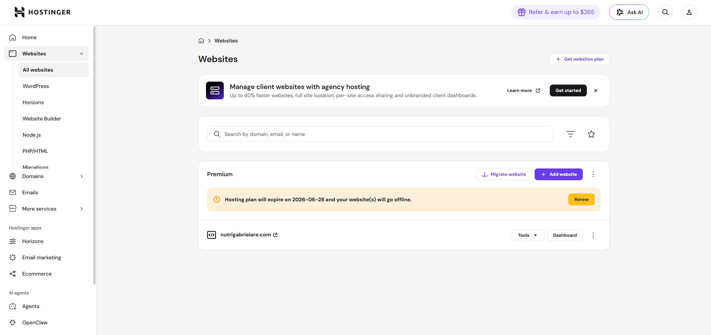
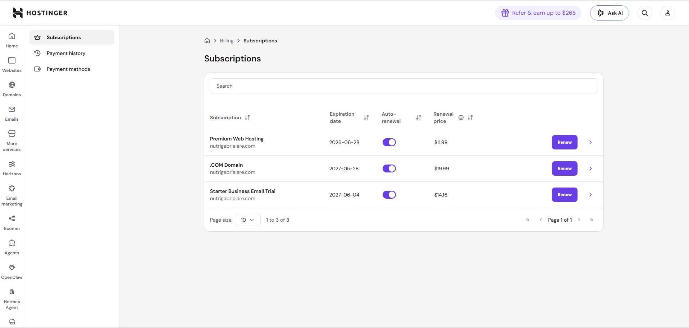
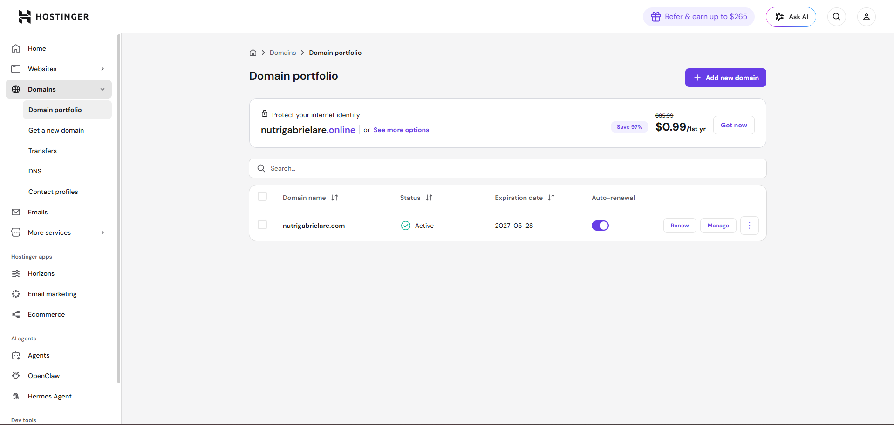
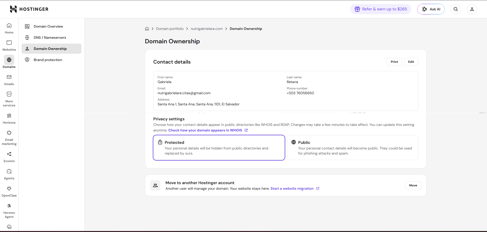
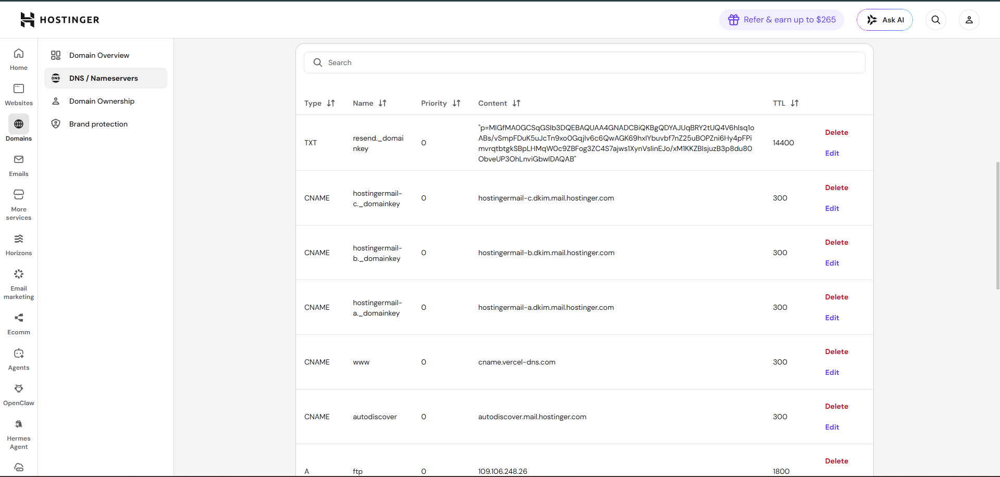
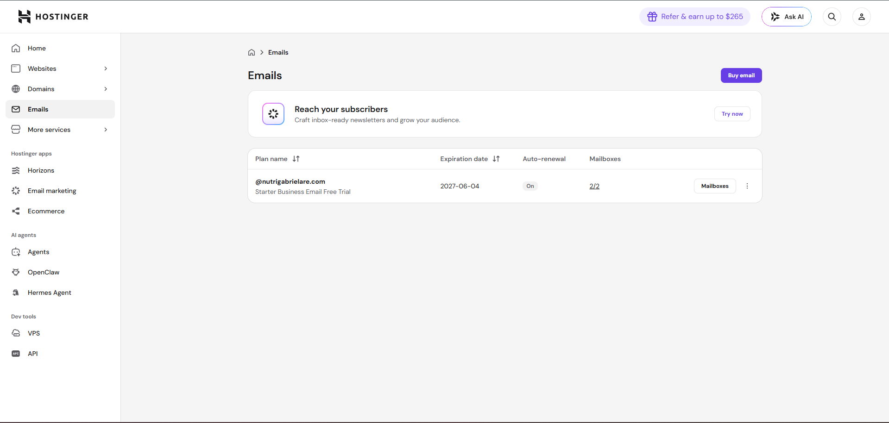
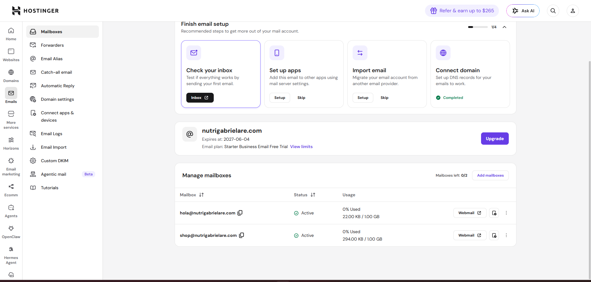
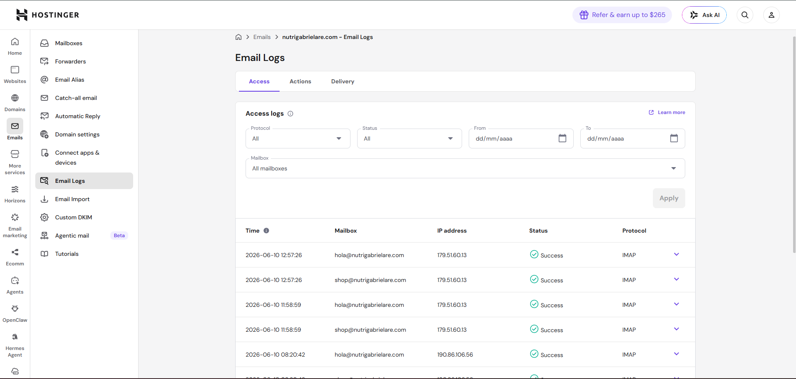

Qué vive en Hostinger, cómo administrarlo y — sobre todo — qué no hay que tocar. Para la administración del dominio nutrigabrielare.com y los correos corporativos.
Hostinger es donde vive el dominio y el correo corporativo. El sitio web NO está alojado en Hostinger.
| Servicio | Dónde vive |
|---|---|
| Dominio nutrigabrielare.com (registro y renovación) | ✅ Hostinger |
| DNS (los registros que dirigen el tráfico) | ✅ Hostinger |
| Correos hola@ y shop@nutrigabrielare.com | ✅ Hostinger (plan Business Email) |
| El sitio web (tienda, panel admin) | ❌ Vercel — el DNS de Hostinger apunta hacia allá |
| Base de datos y archivos | ❌ Supabase |
| Pagos | ❌ Wompi |
| Correos automáticos del sitio (confirmaciones) | ❌ Resend (salen como shop@, las respuestas llegan al buzón de Hostinger) |

En Billing → Subscriptions (menú del perfil, arriba a la derecha) están los 3 servicios contratados:

| Suscripción | Vence | ¿Es necesaria? |
|---|---|---|
| .COM Domain (el dominio) | 2027-05-28 | SÍ — crítica. Si vence, el sitio Y el correo dejan de funcionar. Mantené la renovación automática activada y la tarjeta al día. |
| Business Email (los buzones) | 2027-06-04 | SÍ — sin ella se pierden los buzones hola@ y shop@. |
| Premium Web Hosting | 2026-06-28 | Consultar con soporte técnico antes de renovar. El sitio web ya NO se aloja aquí (corre en Vercel). Ver nota abajo. |
En Domains → Domain portfolio se administra nutrigabrielare.com.


El dominio está a nombre de Gabriela Retana con privacidad Protected (sus datos personales no aparecen en directorios públicos). Si cambia de correo o teléfono, actualizá estos datos con Edit — ahí llegan los avisos importantes del dominio.
En Domains → nutrigabrielare.com → DNS / Nameservers están los registros que hacen funcionar TODO. Cada registro tiene un propósito:

| Registro | Qué hace | Si se borra… |
|---|---|---|
A @ → 76.76.21.21 | Apunta nutrigabrielare.com al sitio en Vercel | El sitio deja de cargar |
CNAME www → cname.vercel-dns.com | Hace funcionar www.nutrigabrielare.com | www deja de cargar |
MX @ → mx1/mx2.hostinger.com | Dirige los correos entrantes a los buzones | Dejan de llegar correos |
TXT @ (v=spf1…) y CNAME hostingermail-a/b/c | Autentican el correo de Hostinger (SPF/DKIM) | Los correos caen en spam |
TXT resend._domainkey, MX/TXT send | Autentican los correos automáticos del sitio (Resend) | Las confirmaciones de compra caen en spam o no salen |
CNAME autodiscover / autoconfig | Configuración automática en Outlook/Thunderbird | Molesto pero no crítico |
A ftp | Acceso FTP del hosting viejo | Nada relevante |
En Emails → nutrigabrielare.com se administran los buzones.


| Acción | Cómo |
|---|---|
| Leer el correo | Botón Webmail junto al buzón, o webmail.hostinger.com |
| Cambiar una contraseña | Menú ⋮ del buzón → Change password |
| Crear otro buzón | Add mailboxes — ojo: el plan actual permite 2; uno más requiere upgrade del plan de email |
| Configurarlo en el teléfono | Ver el Manual de Correo (documento aparte) con los datos IMAP/SMTP |
Si un correo "no llega" o "no sale", Emails → Email Logs muestra la actividad real de los buzones:

| Problema | Dónde mirar |
|---|---|
| "No me llegan correos al buzón" | Pestaña Delivery: ¿aparece el correo como entregado? Si sí, revisá la carpeta de spam del cliente de correo. |
| "No puedo entrar al buzón desde el teléfono" | Pestaña Access: si no aparecen intentos, la app está mal configurada (ver Manual de Correo); si aparecen como Failed, la contraseña está mal. |
| "Una clienta no recibió su confirmación de compra" | Eso NO es de Hostinger — esos correos salen por Resend. Revisá el panel del sitio → Correos (ver Manual de Usuario, cap. 11). |
| ✅ Hacé con confianza | 🚫 Nunca sin consultar |
|---|---|
| Leer y responder correos por Webmail | Borrar o editar registros DNS |
| Cambiar contraseñas de los buzones | Cambiar nameservers del dominio |
| Verificar fechas de renovación y la tarjeta de pago | Transferir el dominio o moverlo de cuenta |
| Revisar Email Logs para diagnóstico | Cancelar la suscripción del dominio o del email |
| Mantener actualizado el contacto WHOIS | Renovar/cancelar el Premium Web Hosting sin consultar (ver cap. 3) |